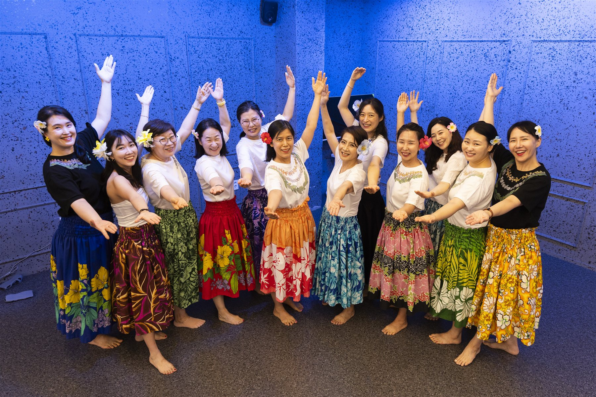

HEALING OHANA HULA
함께 춤추고,
함께 피어나는 시간
손끝에 마음을 담고, 발끝으로 이야기를 잇는 우리.
힐링 오하나 훌라의 배움과 연습을 모았습니다.
10주
차곡차곡 쌓인 시간
4곡
몸으로 기억하는 이야기

PHOTO BY 강남라이프OUR MOMENTS, TOGETHER.배움이 추억이 되는 곳
TEN WEEKS, ONE SHARED MEMORY
우리의 춤이, 한 편의 추억으로.
A LITTLE STEP, A SHARED MEMORY
우리의 훌라 아카이브
한 주씩, 한 곡씩. 다시 꺼내 보는 우리들의 시간.
열 번의 만남, 우리의 기록
수업 영상부터 사진까지, 그날의 순간들을 함께 살펴보세요.
기록을 불러오는 중입니다.
아직 표시할 기록이 없어요
다른 주차나 연습곡을 선택해 보세요.
FINAL GATHERING
종강모임
레이를 엮고 함께 웃던 마지막 날의 순간들.
10주, 배움의 흐름 CURRICULUM
은주쌤 일본 워크샵 다녀오다
워크숍 사진을 따로 모았습니다.
서로의 리듬에 귀 기울이며,
우리의 훌라는 계속됩니다.